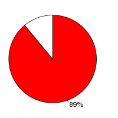

Human (Homo sapiens, GRCh37) and Mouse (Mus musculus, GRCm38) were aligned using the LastZ alignment algorithm (LastZ) in Ensembl release 68. Human was used as the reference species. After running LastZ, the raw LastZ alignment blocks are chained according to their location in both genomes. During the final netting process, the best sub-chain is chosen in each region on the reference species.
Full list of pairwise alignments| Gap open penalty (O) | 400 |
| Gap extend penalty (E) | 30 |
| HSP threshold (K) | 3000 |
| Threshold for gapped extension (L) | 3000 |
| Threshold for alignments between gapped alignment blocks (H) | 2200 |
| Masking count (M) | |
| Seed and Transition value (T) | 1 |
| Additional parameters | --ambiguous=iupac |
| Scoring matrix (Q) | Default |
| Human | Mouse | |
|---|---|---|
| Chunk size | 30,000,000 | 10,100,000 |
| Overlap | 0 | 100,000 |
| Group set size | 0 | 10,100,000 |
| Masking options | $ENSEMBL_CVS_ROOT_DIR/ensembl-compara/scripts/pipeline/human36.spec | {default_soft_masking => 1} |
Number of alignment blocks: 1488960
| Genome coverage(bp) | Coding exon coverage (bp) | |
|---|---|---|
| Human |
|
|
| 980,812,175 out of 3,098,825,702 | 33,856,240 out of 35,155,918 | |
| Mouse |
|
 |
| 898,566,184 out of 2,730,871,774 | 31,891,046 out of 35,974,797 |